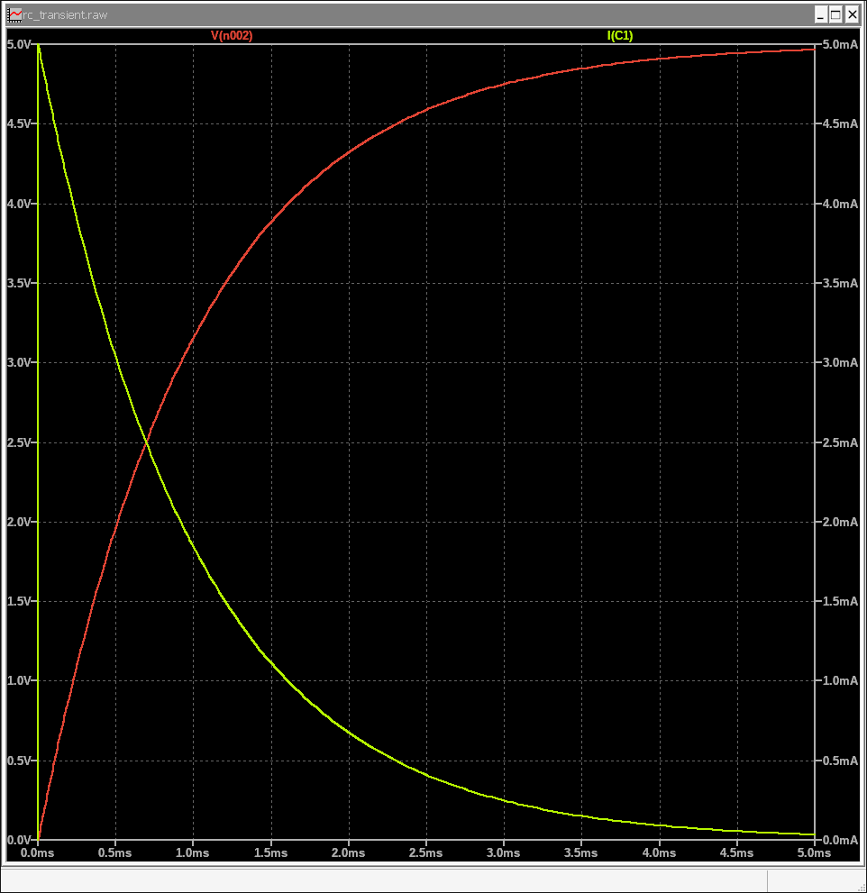

3. Basic Transient Analysis: Observing Changes Over Time
Transient analysis shows how your circuit behaves over a period of time. This is crucial for understanding signals, oscillations, charging/discharging effects, and any time-varying behavior in your circuit.
3.1 Setting Up a Simple Circuit
Let's set up a simple RC (Resistor-Capacitor) circuit to observe its charging and discharging behavior:
- New Schematic: Open a new schematic (File > New Schematic or Ctrl+N).
- Place Components:
- A Voltage Source (voltage): Right-click and set its DC value to 5V.
- A Resistor (res): Right-click and set its Resistance to 1k.
- A Capacitor (cap): Right-click and set its Capacitance to 1u (for 1 microfarad).
- A Ground (GND).
- Wire Circuit: Connect them in series: Voltage Source (+) to Resistor, Resistor to Capacitor, Capacitor to Ground, Voltage Source (-) to Ground.
- Save: Save your circuit (e.g., rc_transient.asc).
For the voltage source, you can add a small series resistance (e.g., 1mOhm) if you encounter convergence issues, though it's often not needed for simple RC circuits.
3.2 Configuring the Transient Analysis
Now, we'll tell LTSpice to simulate this circuit over a specific period.
- Go to Simulate > Edit Simulation Cmd from the menu bar.
- In the Edit Simulation Command dialog box, select the Transient tab.
- Set the Stop time. For our RC circuit (1kΩ, 1µF), the time constant is R × C. To see the full charge, let's simulate for about 5 time constants, so enter 5m (for 5 milliseconds).
- Time to start saving data: (Optional) Leave blank or set to 0 to save from the beginning.
- Maximum time step: (Optional, but useful for detail) Enter a value like 1u (1 microsecond) for smoother waveforms, especially if your circuit has fast changes.
- Check Skip Initial Operating Point Solution.
- Click OK. A .tran 0 5ms 0 1u (or similar) directive will appear on your cursor. Click to place it on your schematic.
LTSpice Command (.tran directive in schematic):
.tran 0 5m 0 1u3.3 Running the Simulation and Viewing Waveforms
Now that the simulation is configured, let's run it and plot the results.
- Go to Simulate > Run (or click the Play icon on the toolbar) or press ALT + R.
- A new plot window (waveform viewer) will appear.
- Move your mouse over a wire on your schematic. A red probe will appear. Click on the wire connected to the capacitor (the node between the resistor and capacitor) to plot the voltage across the capacitor.
- To plot current, hover over a component body (e.g., the resistor). A blue probe (for current) will appear. Click on the resistor to plot the current through it.
You should see the capacitor voltage gradually rise from 0V towards 5V (charging), and the current through the resistor initially high, then decaying to zero as the capacitor charges.
You can zoom in/out on the waveform viewer, measure points with cursors, and add more traces as needed.
You've successfully performed a transient analysis! This is fundamental for analyzing dynamic circuit behavior.